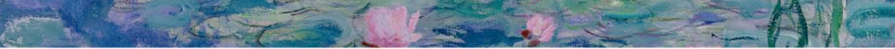

Biografía
Claude Monet nació el 14 de noviembre de 1840 en el quinto piso de 45 rue Laffitte, en el distrito 9 de París.
Fue el segundo hijo de Claude Adolphe Monet y Louise Justine Aubrée Monet, cantante. El 20 de mayo de 1841, fue bautizado en la iglesia parroquial Notre-Dame-de-Lorette como Oscar-Claude, pero sus padres lo llamaban simplemente Oscar. Pese a ser bautizado como católico, se convertiría en ateo. En 1845, su familia se trasladó a Le Havre , en Normandía, donde se crió y donde cursó estudios de dibujo y pintó marinas junto a Eugène Louis BoudinEugène Louis Boudin. Ganó algo de dinero dibujando caricaturas.
En 1855, a los quince años, gozaba ya de cierta reputación como caricaturista. En 1857, con diecisiete, vio morir a su madre. Un año después, en 1858, participó por primera vez en la Exposition Municipale du Havre, celebrada entre los meses de agosto y octubre, con el cuadro titulado Vue prise à RouellesVue prise à Rouelles, fechado en ese mismo año.
Pintaba al aire libre paisajes y escenas de la sociedad burguesa y gozó de cierto éxito en las exposiciones oficiales. Según su estilo evolucionaba, transgredía los convencionalismos en beneficio de una expresión artística más directa.
En 1874, junto a sus colegas, organizó sus propias exposiciones. Se autodenominaron los independientes, aunque se les aplicó burlonamente la etiqueta de impresionistas a causa del aspecto inacabado de sus obras (como una primera impresión) y también porque una de las pinturas de Monet llevaba el título Impresión: sol naciente (1872, Museo Marmottan, París).
Pinturas
- Mujeres en jardín.
- Water lilies, evening effect.
- Impresión, sol naciente.
- Waterloo Bridge, London.
- Haystack at Giverny.